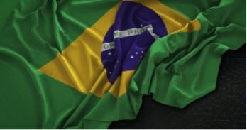
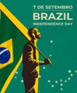

No dia 7 de setembro de 1822, o Brasil era oficialmente separado de Portugal, tanto política quanto economicamente. Consolidado pelo príncipe regente, Dom Pedro, que foi apoiado pelos políticos brasileiros que, assim como ele, não apoiavam a criação de uma república no país, como foi o caso dos demais Estados formados nos processos de independência das Américas, o ato rompeu definitivamente com as Cortes. Tornou-se feriado nacional, com o título de Dia da Independência, graças a uma lei promulgada em 1949, durante o governo de Eurico Gaspar Dutra.

Na realidade, o dia do grito de “Independência ou Morte!” às margens do rio Ipiranga, fato esse que ainda é questionado e debatido pelos historiadores brasileiros, foi apenas a culminância da separação de Portugal, um longo processo que já havia começado há um tempo, com o Dia do Fico, em 9 de janeiro de 1822, quando o príncipe, após ter lido a petição que pedia sua permanência no Brasil, declarou que não voltaria para Portugal, contrariando a decisão das Cortes. Após isso, adotou uma série de medidas que visavam concretizar sua decisão de permanecer no Brasil e governá-lo. Com o tempo, a relação entre os dois países foi ficando cada vez mais desgastada, e o rompimento oficial aconteceu, no dia 7 de setembro.
Porém, no fatídico dia da declaração de Dom Pedro, a Independência já estava realizada, e faltava apenas a oficialização por parte do príncipe. Isso porque, em 2 de setembro daquele mesmo ano, sua esposa Dona Leopoldina, chefe do Conselho de Ministros e regente durante a viagem de Dom Pedro, assinou o decreto que declarava a separação do Brasil de Portugal, e mandou uma carta que incentivava o marido a proclamar oficialmente a Independência. E, no dia 1° de dezembro aconteceu a “Cerimônia de Consagração e Sagração do Imperador D. Pedro I”

Parabéns para aquelas que cuidam de seus filhos, com respeito, amor e carinho!
Feliz dia das mães!